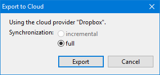

Export to Cloud |
The data created and managed by Relations can be exported to the cloud. Implemented as possible cloud providers are Dropbox, MS Azured and Google Drive. The export to the cloud is needed for users using the Relations Mobile Android app. However, it can be used as additional backup too.  |